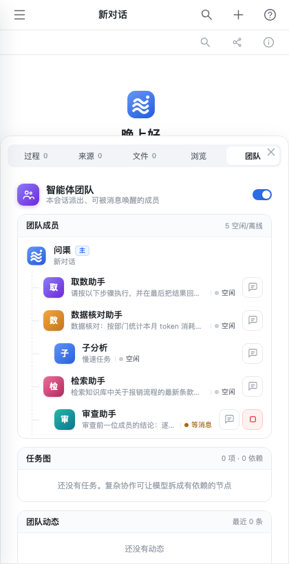

现象：iPad（竖屏 1024 / 分屏 900 / 横屏 1180）上，右栏走的是 ≤1200 的浮层档，宽度被写死 260px。
外框 260 − 内边距 20 − 卡片边框/内边距 18 − 树缩进 24 = 成员行只剩约 175px，再扣掉头像 30、间距 20、状态 30～40、动作 24～49，
名字一栏只剩 45px（「取数助手」5 个字要 50px）——名字被截成「取数…」，带「等消息 + 叫停」的行名字栏直接 0px，
行内只剩头像和两个按钮。触屏没有 hover，动作又必须常驻，横向更挤。
.as-sheet 的 width:auto 覆盖浮层宽度）· 真实运行截图
@media (max-width:1200px) .right-panel{width:260px} 改为
width: min(400px, 100vw - 80px)。900 视口得 400；600 得 520 前的 400；再窄（手机 375）得 295，仍留 80px 能点到对话区外关闭。
宽屏常驻两栏（>1200）继续由拖拽条 --rp-w 控制，本图不变。max-width:130px 的硬上限去掉（那是对更宽旧版式的妥协，现在名字拿到的是整行剩余宽度）。
触屏仍常驻动作（手指无 hover），只是从 24px 放大到 30px 并给出可见边框。min-width:0 + 省略号写，只会更松。as-sheet 的 width:auto 覆盖本改动，形态不变。